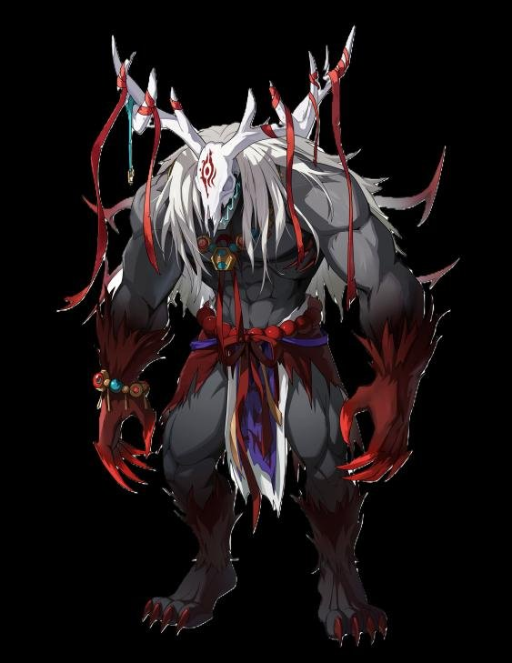

CONCEPT
‘세 개의 눈’을 가진 요괴의 수장
봉인된 일본풍 요괴들의 수장으로, 서양 요괴 ‘웬디고’를 동양적인 느낌으로 옮겼습니다.
외형 포인트인 ‘삼안(세 개의 눈)’은 패턴과 이어지도록 디자인했고, 스테이지 기믹의 심볼로도 써서 리소스의 통일성을 살렸습니다. 처음 보는 기믹이어도 눈 모양이 보이면 보스 패턴이라는 걸 알 수 있습니다.

B · Boss Design · 4P Co-op · Live
딜러·탱커·힐러가 각자 맡은 일을 해내야 쓰러지는, 4인 멀티 PVE 던전 ‘협동원정대’의 최종 보스입니다.
CONCEPT
봉인된 일본풍 요괴들의 수장으로, 서양 요괴 ‘웬디고’를 동양적인 느낌으로 옮겼습니다.
외형 포인트인 ‘삼안(세 개의 눈)’은 패턴과 이어지도록 디자인했고, 스테이지 기믹의 심볼로도 써서 리소스의 통일성을 살렸습니다. 처음 보는 기믹이어도 눈 모양이 보이면 보스 패턴이라는 걸 알 수 있습니다.

PROBLEM
협동원정대는 매칭으로 만난 4명이 각자 클래스 역할을 수행하며 보스를 공략하는 콘텐츠입니다. 모바일에서는 채팅으로 작전을 짜기 어렵습니다. 그래서 패턴마다 누가 무엇을 해야 하는지가 화면만 보고도 드러나도록 직관적인 레벨 디자인을 목표로 잡았습니다.
역할 미션
다방면으로 날아오는 투사체는 탱커가 방패로 막고, 반영구적으로 누적되는 디버프는 힐러가 상태 이상 치유로 지웁니다.
개인 미션
각 유저 위치에 암흑 구체가 생기고 일정 시간 뒤 십자 모양으로 폭발해, 개인 위치 선정을 요구합니다.
학습 패턴
광범위 장판 공격은 틀린 그림 찾기로 세이브 존을 찾아 피합니다. 이 규칙이 2페이즈 필살 패턴의 예습이 됩니다.


DECISION · 협동 미션
보스가 마법진을 만들고 봉인석을 떨어뜨립니다. 마법진 중 일부는 세이브 존을 만드는 가짜입니다. 떨어진 봉인석은 부술 수 있지만 혼자서는 부술 수 없어서, 팀원과 가짜 봉인석을 구별하고 캐스팅 시간 안에 일점사해야 합니다.
캐스팅이 끝나면 보스는 맵 전체에 즉사기를 씁니다. 부서진 가짜 봉인석 자리에만 세이브 존이 생깁니다. 멀티 전투의 긴장감과 협동의 재미를 한 패턴에 담고, 1페이즈의 틀린 그림 찾기로 미리 규칙을 익히게 했습니다.
진짜와 가짜 마법진이 섞여 등장
혼자서는 부술 수 없는 내구도
캐스팅 시간 안에 팀이 함께 파괴
파괴된 가짜 봉인석 자리만 세이브 존
ORIGINAL SLIDES